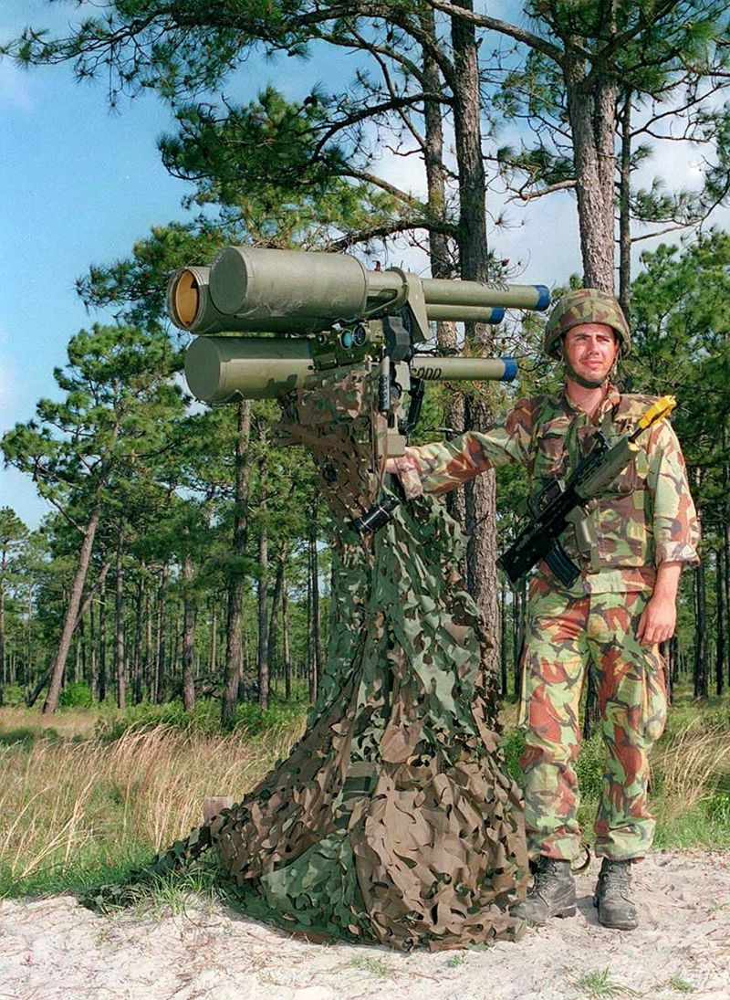
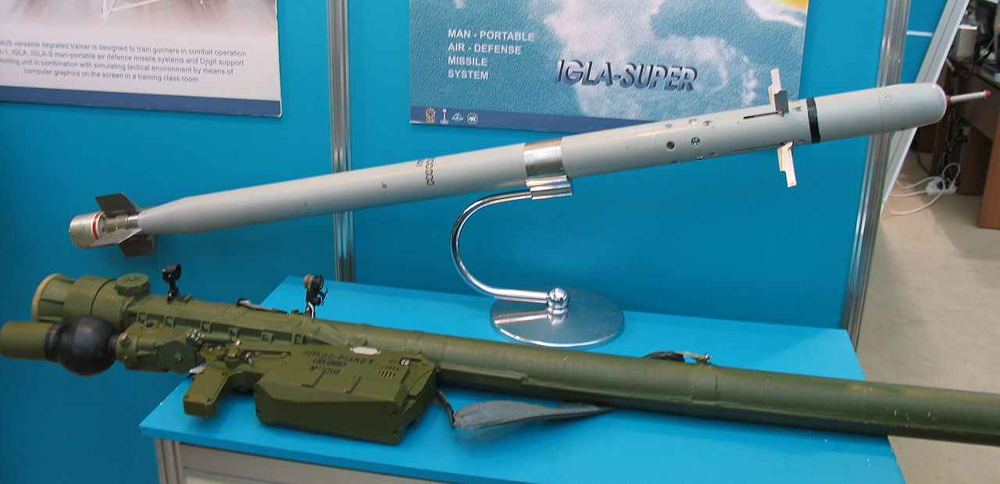
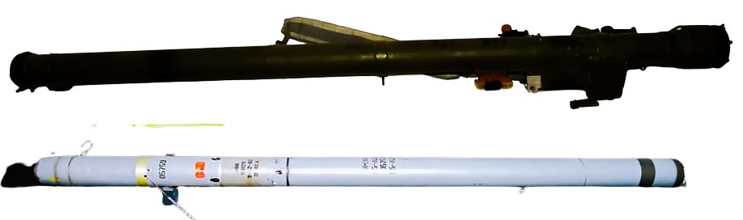
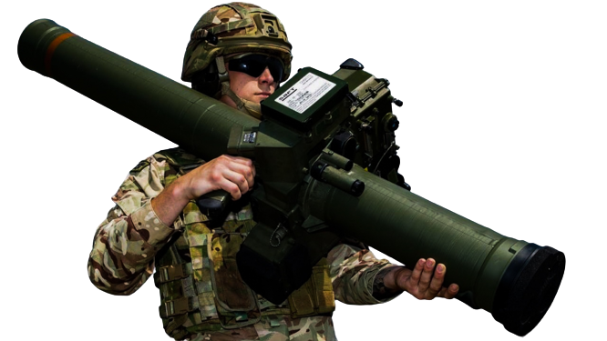
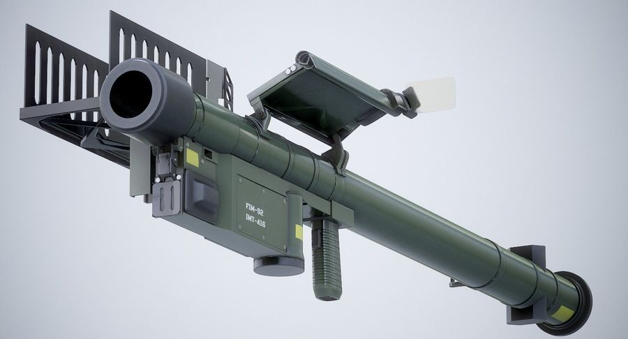
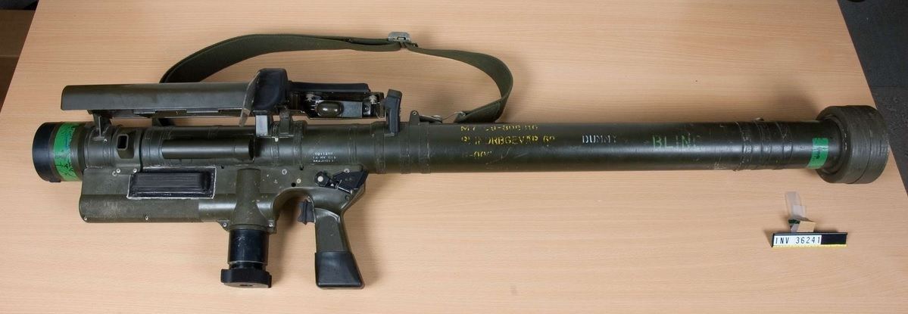

Що таке ПЗРК?
Переносний зенітно-ракетний комплекс (ПЗРК) — зенітно-ракетний комплекс, призначений для ураження вертольотів і літаків противника, що летять низько, на зустрічних і наздоганяльних курсах в умовах впливу природних і штучних теплових перешкод. Комплекс, як правило, транспортується (переноситься) та застосовується за призначенням одним військовослужбовцем. В основу побудови ПЗРК може бути покладена пасивна система самонаведення («Стінгер», «Стріла-2, -3», «Ігла»), радіо-командна система («Блоупайп»), система наведення по лазерному променю (RBS-70).
ПЗРК «Javelin»
Джавелін — британський переносний зенітно-ракетний комплекс, призначений для ураження вертольотів, літаків та інших засобів повітряного нападу противника, що здійснюють польоти на малих і гранично малих висотах. Може бути використаний для знищення наземних цілей на відстані до 3 кілометрів. Розробники ПЗРК «Джавелін» відмовились від класичної на той час інфрачервоної головки самонаведення та обрали набагато надійнішу, на їхню думку, напівавтоматичну радіокомандну систему самонаведення.
Під час запуску ракети оператор повинен постійно стежити за рухом цілі за допомогою свого оптичного прицілу, поєднуючи прицільну мітку прицілу з ціллю. При цьому електроніка, що входить до пускового блоку, виробляє команди для маневрування ракетою, забезпечуючи ураження цілі. у комплексі «Джавелін» застосовується осколочно-фугасна бойова частина
| Максимальна швидкість ракети | 435 м/с |
|---|---|
| Ефективна дальність ураження | Проти реактивних літальних апаратів: 300-4500 м |
| Проти гелікоптерів: 300-5500 м | |
| Ефективна висота цілей | 10—3000 м |
| Система управління | Радіокомандна, напівавтоматична по лінії візування |
| Рушійна установка | 2-ступінчастий РДТП |
| Бойова частина | Oсколкова, 2,74 кг |
| Детонатор | Контактний та дистанційний |
| Вага ракети | 12,7 кг |
Модифікації
Javelin S15
S15 або «Удосконалений Джавелін» (англ. Advanced Javelin) із комбінованою перешкодозахищеною системою управління з наведенням лазерним променем
Lightweight Multiple Launcher (LML)
.jpg)
LML (англ. Lightweight Multiple Launcher, буквально Полегшена багатоствольна пускова установка) розроблена, щоб забезпечити ПЗРК «Джавелін» можливість обстрілу кількох цілей. Система LML використовує три стандартні пускові труби ракет «Джавелін» і стандартний прицільний наплічний блок як обладнання, що приєднується.
У вільному стані опорну трубу підтримують у вертикальному положенні опори триніжки, що обертаються в ексцентричній опорній втулці. Гвинтові домкрати розташовані між вершиною втулки та опорами триніжки та використовуються для регулювання висоти встановлення ПУ. При розгортанні в окопі опорну втулку можна частково опустити опорною трубою і потім закріпити на відповідній висоті. При цьому одна з опор триніжки звисає вертикально, а інші опори слугують для забезпечення бічної підтримки ПУ.
Lightweight Multiple Launcher (Vehicle) (LML(V))
Пускову установку LML(V) проєктували для встановлення на броньовану і неброньовану техніку та інші сухопутні засоби забезпечення мобільності, для захисту аеродромних льотних полів та інших важливих споруд і маршрутів постачання від низьковисотних повітряних атак. Вона призначена для встановлення на багато видів бронетранспортерів
Lightweight Multiple Launcher (Naval) (LML(N)
Корабельний зенітний ракетний комплекс ближнього радіусу дії LML(N) використовують для ешелонування протиповітряної оборони корабля. Призначений для застосування у другому ешелоні, у поєднанні з далекобійнішими бортовими засобами ППО, після проходження повітряними цілями першого ешелону оборони, а також для знищення засобів повітряного нападу противника, що раптово з'являються на горизонті
ПЗРК «Ігла»
«Ігла» — російський/радянський переносний зенітно-ракетний комплекс, призначений для ураження низько летючих вертольотів і літаків супротивника на зустрічних й паралельних курсах в умовах впливу природних та штучних теплових перешкод. Комплекс прийнято на озброєння 1983 року. Розробка принципово нового комплексу почалася в Коломні 1971 року. Головна мета полягала в тому, щоб створити ракету з кращою стійкістю до заходів протидії та вищою бойовою ефективністю, аніж комплекси попереднього покоління типу «Стріла».У ПЗРК «Ігла» нова оптична головка самонаведення з логічним блоком селекції.
Використання нової теплової ГСН з охолодженням дозволило застосувати для зниження аеродинамічного опору витончену голкоподібну конструкцію ракети.
Комплекс забезпечував ураження повітряних цілей на зустрічних та наздоганяючих курсах, що відстрілюють із проміжками часу від 0,3 с і більше. Теплові перешкоди із перевищенням сумарної потужності випромінювання над потужністю випромінювання цілі до шести разів. При відстрілі цілями теплових перешкод на зустрічних і наздоганяючих курсах поодиноко або залпами (до шести штук у залпі) середня ймовірність поразки мети однієї ЗУР 9М39 за проліт зони ураження становила 0,31 при стрільбі назустріч і 0,24 при стрільбі навздогін
| Максимальна швидкість ракети | 570 м/с |
|---|---|
| Ефективна дальність ураження | до 5000 м |
| Ефективна висота цілей | 10—3500 м |
| Бойова частина | Oсколково-фугасна, 1,3 кг |
| Вага ракети | 10,6 кг |
Модифікації
-
Ігла-Д - варіант з розбірною пусковою трубою для ВДВ.
-
Ігла-В - для озброєння гелікоптерів та наземної техніки. Доданий блок, який забезпечує можливість спільного використання двох ЗКР
-
Ігла-Н - використана нова ЗКР, з більш потужною бойовою частиною, що істотно збільшує ймовірність ураження цілей.
-
Ігла-1М, «336-24» - українські модифікації ПЗРК «Ігла-1», «Ігла», з удосконаленою ГСН ракети (збільшено дальність та перешкодозахисність)
-
Ігла-С - комбінований варіант «Ігла-Д» та «Голка-Н» з рядом технічних поліпшень. Збільшено масу БЧ, з'явилася можливість обстрілу цілей типу БПЛА і КР, що низько летять. Імовірність влучання 0,8-0,9. Комплекс пройшов державні випробування у 2001 році. Прийнятий озброєння в 2002. «Ігла-С» 9К338 станом на 2022 рік на озброєнні ЗС РФ, разом із ПЗРК «Верба».
ПЗРК «Стріла-3»
Стріла-3 — радянський переносний зенітно-ракетний комплекс, модернізація «Стріли-2».Використовувала ракети 9 М36 з новою інфрачервоною головкою самонаведення і конічним скануванням фазомодульованого сигналу (ЧС замість AM-модуляції по амплітуді зі спіральним скануванням), що забезпечує підвищену стійкість до радіоперешкод і поліпшену роботу з селекції хибних цілей, роботу з цілями, що швидко маневрують на високих швидкостях. Головна відмінність від «Стріла-2», наявність охолоджувальної ГСН, що дозволило застосовувати ракету за наявності опадів і на тлі природних перешкод. На озброєнні Збройних сил СРСР з січня 1974. «Стріла-3» експортувалася у більш ніж 30 країн світу. Замінена на ПЗРК 9К38 «Ігла».
| Максимальна швидкість ракети | 410 м/с |
|---|---|
| Ефективна дальність ураження | до 4100 м |
| Ефективна висота цілей | 30—2300 м |
| Бойова частина | Oсколково-фугасна, 1,3 кг |
| Вага ракети | 10,3 кг |
| Точність | 0,31-0,33 |
ПЗРК «Starstreak»
Starstreak — британський переносний зенітно-ракетний комплекс, призначений для ураження вертольотів та літаків противника, що низько летять. Також позначають Starstreak HVM (від скор. англ. High Velocity Missile — високошвидкісна ракета). В 1997 році прийнята на озброєння британської армії.Після пуску та розгону ракети відбувається відділення трьох суббоєприпасів, які наводяться далі за принципом «лазерної стежки» (напівавтоматичне командне наведення лазерним променем, так званий «осідланий промінь», який називають SACLOS beam-riding). Використання в бойовій частині трьох кінетичних вольфрамових субелементів, кожен з яких має свою скалкову бойову частину, збільшує імовірність успішного ураження цілі.
| Максимальна швидкість ракети | ~1170 м/с |
|---|---|
| Ефективна дальність ураження | 300-7000 м |
| Ефективна висота цілей | до 5000 м |
| Бойова частина | Три проникні вольфрамові субелементи (так звані “дротики”), що мають осколкові БЧ. 0.9 кг |
| Вага ракети | 14 кг |
Модифікації
Stormer HVM

Комплекс встановлено на шасі Alvis Stormer. Може знищувати повітряні цілі на висоті до 7 км, та на відстані до 7 км. Але при цьому дальність виявлення повітряної цілі типу «літак» може складати до 18 км, дальність виявлення повітряної цілі типу «вертоліт» — до 8 км. ЗРК Stormer HVM має боєзапас в 12 ракет Starstreak, окрім 8 ракет безпосередньо в пускових установках.з восьмизарядною пусковою установкою з внутрішнім місцем зберігання ще 8 ракет. Це найпоширеніший варіант.
ПЗРК «FIM-92 Stinger»
FIM-92 «Стінгер» (англ. FIM-92 Stinger — в перекладі «жало») — переносний зенітно-ракетний комплекс класу «земля — повітря» з інфрачервоною головкою самонаведення розробки американської компанії General Dynamics. Призначений для ураження вертольотів і літаків противника, що низько летять, на зустрічних і навздогінних курсах в умовах впливу природних і штучних теплових перешкод. Прийнятий на озброєння в США в 1981 році, перебуває на озброєні в понад 29 країнах.
Звичайні ракети системи «Стінгер» мають контактний підривач. Разом із поширенням невеликих, високоманеврових безпілотних літальних апаратів та ударних систем на їхній основі виникла потреба в підвищенні ефективності ПЗРК типу «Стінгер» боротись з ними. Так, в 2018 році була продемонстрована модифікація зенітних керованих ракет «Стінгер» з неконтактним підривачем
| Максимальна швидкість ракети | 725 м/с |
|---|---|
| Ефективна дальність ураження | 200-4500 м |
| Ефективна висота цілей | до 3500 м |
| Бойова частина | 2.3 кг |
| Вага ракети | 10.1 кг |
Модифікації
POST
The Stinger — Passive Optical Seeker Technique (POST) модифікація, де оригінальна теплова голівка самонаведення замінена на вдосконалену головку з інфрачервоним датчиком зі сканером типу «розетка» та датчиком ультрафіолетового випромінювання і цифровою обробкою даних. Нова головка мала кращі характеристики виявлення цілей а також захист від штучних інфрачервоних контрзаходів та фонових шумів.
RMP/FIM-92D
Stinger — Reprogammable MicroProcessor (RMP/FIM-92D) модифікація з потужнішим мікропроцесором та кращим захистом від інфрачервоної протидії. Також істотно спрощено процес оновлення вбудованого програмного забезпечення, завдяки чому з'явилась можливість поліпшувати характеристики системи без складної перепрошивки готових виробів.
FIM-92E
Stinger-RMP Block I (FIM-92E) модернізація Stinger-RMP, поліпшує точність та підвищує ефективність. Серед іншого, має новий датчик в голівці самонаведення, меншу батарею, кращий процесор та модуль пам'яті. Завдяки лазерному гіроскопу не потребує значного підвищення лінії прицілювання перед пуском
ПЗРК «FIM-43 Redeye»
«Ре́дай» - американський переносний зенітно-ракетний комплекс, призначений для ураження повітряних цілей, що низько летять (літаків, гелікоптерів, БПЛА). Знято з озброєння в США між 1982 і 1995 роком і замінений удосконаленою моделлю, що отримала назву «Стінгер».
Головки самонаведення вихідних моделей ракет орієнтувалися на контрастний температурний силует корпусу літального апарату серед відносно рівномірної фонової обстановки, на просунутих моделях (включаючи «Стінгер» перших моделей) наведення здійснюється на сопло реактивного двигуна (що генерує найбільш інтенсивне випромінювання в інфрачервоному діапазоні.
| Максимальна швидкість ракети | 580 м/с |
|---|---|
| Ефективна дальність ураження | до 4500 м |
| Ефективна висота цілей | до 2700 м |
| Бойова частина | Фугас ~1 кг |
| Детонатор | Контактний та неконтактний |
| Вага ракети | 8.3 кг |
Модифікації
Redeye (XM41)
- Redeye Block I (FIM-43A) - зразок, прийнятий на озброєння у 1969 році з
видозміненими ракетою,
пусковою трубою та пусковим механізмом
- Redeye Block II (FIM-43B) - удосконалений варіант попередньої
моделі з ракетою M110
- Redeye Block III (FIM-43C)- удосконалений варіант
попередньої моделі з ракетою
M115 і новим пусковим механізмом
- Redeye Block IV (FIM-43D)- удосконалений варіант попередньої моделі
- Redeye Block III (FIM-43C)- удосконалений варіант
попередньої моделі з ракетою
M115 і новим пусковим механізмом
- Redeye Block II (FIM-43B) - удосконалений варіант попередньої
моделі з ракетою M110
- Redeye 2 — повністю одноразовий із вбудованим пусковим механізмом («вистрілив та викинув»)
- RAM (AIM-43) - авіаційна ракета ближнього повітряного бою (УРВВ) для оснащення ударних гелікоптерів, на озброєння не надходила
- ADSM (AGM-43) - авіаційна ракета придушення ППО (УРВП) для оснащення ударних гелікоптерів. Автобронетанковим управлінням перевірялася важлива можливість створення можливим противником (СРСР) УРВП з ІЧ ДСН
ПЗРК «Blowpipe»

Blowpipe — британський переносний зенітно-ракетний комплекс, призначений для ураження вертольотів та літаків на низькій висоті. Був прийнятий на озброєння британської армії на початку 1972 року. Після цього перебував на озброєнні Канади, Чилі, Еквадору, Афганістану, Аргентини, Малайзії та інших країн.
ПЗРК Blowpipe складається з ракети в транспортно-пусковому контейнері і прицільного блоку. Ракета являє собою тонку трубу довжиною 1,4 м, в центральній секції знаходиться бойова частина. У носовій частині розташоване обладнання системи наведення і бойова частина, в хвостовій частині розміщується ракетний двигун.Між першою і другою ступенями змонтована спеціальна перегородка, яка запобігає дочасному запуску другого ступеня. У носовій частині є чотири аеродинамічних крила дельтоподібної форми, в хвостовій частині — чотири крила для забезпечення стабілізації і для аеродинамічного керування. В обох випадках крила мають надзвуковий аеродинамічний профіль. Якщо протягом перших п'яти секунд на борт ракети не надходять команди наведення, то в ній спрацьовує самоліквідатор
| Максимальна швидкість ракети | ~580 м/с |
|---|---|
| Ефективна дальність ураження | 700 - 3500м |
| Ефективна висота цілей | 10 - 2500м |
| Бойова частина | Осколоково - фугас 2.2 кг |
| Детонатор | Неконтактний та інфракрасний |
| Вага ракети | 11 кг |
Модифікації
Submarine Launched Airflight Missile (SLAM)
Для потреб флоту була розроблена модифікація ПЗРК Blowpipe: блок з 4 ракет, які запускаються з шахти підводного човна.
Як користуватися ПЗРК?
Нижче наведена інструкція користування ПЗРК на прикладі FIM-92 Stinger в текстовій форматі.
- Прикріпи "Запитувач IFF до поясу та зажимом IFF до бронижелету."
- Поклади зброю на плече та переконайся що BCU на місці.
- Розгорни антену, підтягни і відпусти.
- Зніми кришку.
- Підніми приціл.
- Від'єднайте (рухом вниз) роз'єм IFF від кришки з зажимом яка прикріплена до бронижелету.
- Зніми захисну кришку рукоятки та підключи кабель IFF. Вирівняйте роз'єм маркеру кабеля із маркером рукоятки перед підключенням.
- Наведи зброю на ціль по центру кільця дальності.
- Натисни перемикач запитувача IFF.
-
Послухай відповідь. Якщо немає звукового сигналу то коли перемикач IFF то це означає що IFF неробочий або не під'єднаний до ПЗРК.
- Якщо отримано позитивну відповідь в Режимі IV , то пролунає 0.5 сек. сигнал, а через 0.5 сек, ще один 0.5 сек. сигнал.
- Якщо позитивна відповідь в Режимі IV не отримана, то запитувач автоматично переключається в Режим III (якщо програма використовує налаштування "РежимIV/III") і запитає знову.
- Якщо позитивна відповідь в Режимі III отримана, то прозвучить 1.5 сек. сигнал. (сигнал-пауза-сигнал)
- Якщо була отримана некоректна відповідь, або відповідь не отримана зовсім, будуть короткі переривчасті сигнали, які вказуватимуть, що ціль ідентифікована, як невідома.
- Розпочни спостереження та визначення дальності до цілі.
- Зачекай, поки ціль не буде в зоні дії.
- Використовуй пристрій безпеки та приводу (перемикач SNA).
- Прислуховуйся до збільшення звуку.
- Натисни і утримуй кнокпку блокування
-
Позитивно індифікуй літак та продовжуй його утримувати з поточним статусом контролю над зброєю
(WCS).
- Підніми зброю.
- Отримай одне із зображень, показаних в кроці 16
- Вогонь (Натиснути спусковий гачок)
- Затримай дихання і продовжуй слідкувати на 3-5сек.
- Вийми BCU протягом 3хв., тримаючи за верхню частину BCU, спрямуй подалі від відкритої шкіри, газ високого тиску все ще може вийти.
Джерела
https://www.ukrmilitary.com/2022/01/fim-92-stinger.html
https://uk.wikipedia.org/wiki/%D0%A1%D1%82%D1%80%D1%96%D0%BB%D0%B0-3
https://uk.wikipedia.org/wiki/Javelin_(%D0%9F%D0%97%D0%A0%D0%9A)
https://uk.wikipedia.org/wiki/FIM-92_Stinger